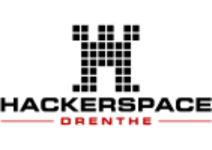

Wat is het?
Een open-source mesh-netwerk op LoRa-technologie. Nodes sturen berichten door van punt naar punt — zonder internet, zonder provider.
Meer lezenMeshcore Drenthe bouwt een decentraal noodnetwerk — zonder abonnement, op zonneenergie, voor de hele provincie.
Een open-source mesh-netwerk op LoRa-technologie. Nodes sturen berichten door van punt naar punt — zonder internet, zonder provider.
Meer lezenGrote afstanden, verspreide dorpen, kwetsbaar bij stroomuitval. Het perfecte testgebied voor een decentraal noodnetwerk.
Bekijk de kaartOf je nu soldeer-ervaring hebt of voor het eerst een schroevendraaier vasthoudt — er is een rol voor iedereen.
Bekijk de rollenMei is Meshcore Maand bij Hackerspace Drenthe. Op woensdag 6 mei trappen we af met een presentatie, live demo en het eerste prototype. Daarna bouwen we er elke woensdag aan verder.
Locatie: De Nieuwe Veste, Coevorden — elke woensdag 19:00–21:00.
Bekijk de volledige planning →Berichten springen van node naar node — als een estafette van walkietalkies.
Je stuurt een bericht via de Meshtastic-app op je telefoon naar de dichtstbijzijnde node.
De node stuurt het bericht via LoRa-radio door naar de volgende nodes in de buurt.
Via meerdere hops bereikt het bericht zijn bestemming — tot tientallen kilometers ver.

Hackerspace Drenthe is een open werkplaats voor hackers, makers en techneuten in Coevorden en omstreken. Meshcore Drenthe is ons nieuwste project: een communicatienetwerk dat werkt als het gewone netwerk het laat afweten.
Bezoek hackerspace-drenthe.nl →Leer alles over mesh-netwerken, LoRa-radio, antennes, firmware en netwerkontwerp — in je eigen tempo.
19 modules van basis tot gevorderd. Gratis certificaat na afronding. Een initiatief van Hackerspace Drenthe.